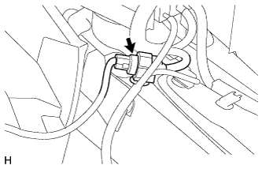
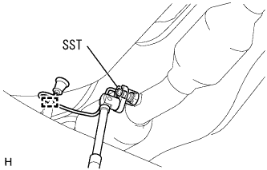

Exhaust pipe ASSY removal |
| 1. Instrument panel finish panel LWR CTR removed |
 |
Clip <c> 2 places, 8 claws, and remove the instrument panel finish panel LWR CTR.
Cut the connector of the power outlet socket and remove the instrument panel finish panel LWR CTR.
Remove the three screws and remove the instrument Katsup holder.
| 2. Oxygen sensor is removed |
|  |
Cut the connector of the oxygen sensor in the room.
|  |
Remove the clamp and pull out the harness outside the vehicle.
Use SST to remove the oxygen sensor.
| 3. Exploist tail pipe ASSY removes |
Remove two bolts and two exhaust pipe support and remove the exhaust tail pipe ASSY.
Remove the gasket.
| 4. Exhaust pipe ASSY FR removed |
Remove two bolts and two compression springs.
Remove two exhaust pipe support and remove the exhaust pipe ASSY FR.
Remove the gasket.